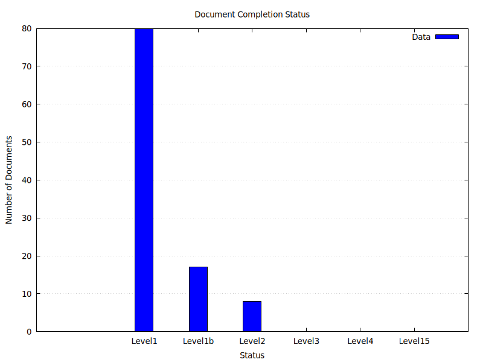

Dynamic Telemetry is a PROPOSAL : please provide feedback! :-)
Dynamic Telemetry is not an implementation, it's a request for collaboration, that will lead to an shared understanding, and hopefully one or more implementations.
Your feedback and suggestions on this document are highly encouraged!
Please:
-
Locate this file ( docs/ReviewProcess.document.md)
-
Add Comments! :)
Direct Sharing URL
If you'd prefer to give us a PR
Learn about overall document status here

Review Process
Because there are many stakeholders and dynamic telemetry, each document has a header that describes the state of review.
Below are the different stages:
Stages of Review
ReviewLevel1 (Incomplete)
Placeholder; incomplete or unwritten
ReviewLevel1b (Talking Points)
ReviewLevel1 plus talking points are enumerated
ReviewLevel2 (PRE-DRAFT)
ReviewLeverl 1b, plus document has been written
ReviewLevel3 (DRAFT)
ReviewLevel2, but in in review
ReviewLevel4 (PENDING)
ReviewLevel3, but generally accepted
ReviewLevel5 (COMPLETE)
ReviewLevel4, signed off
Status of Documents

Individual Status
author: Generated File status: Level5